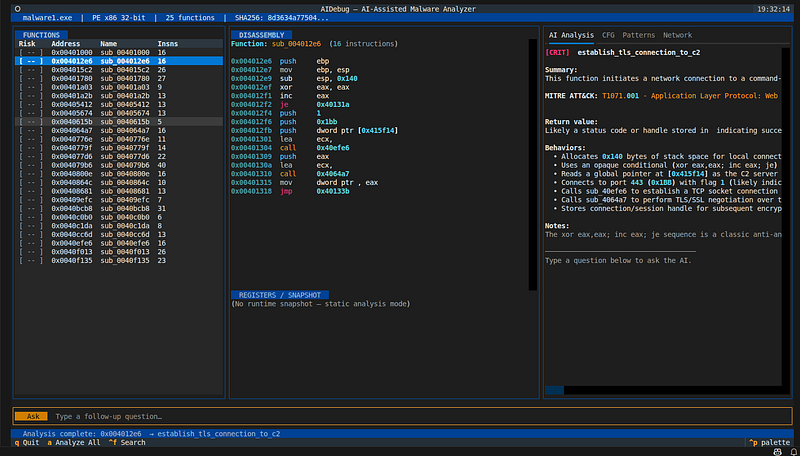
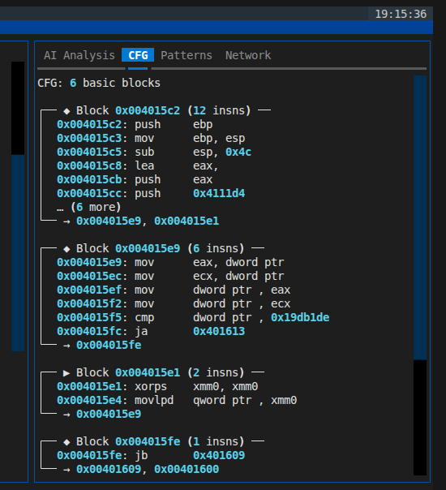
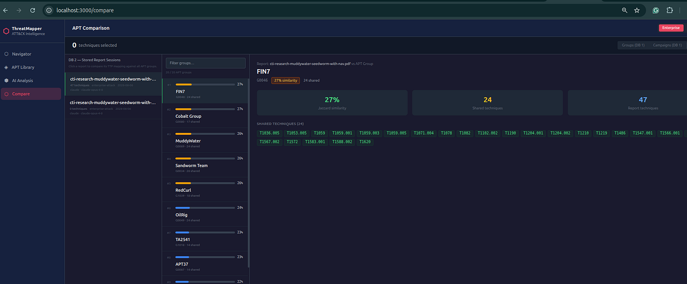
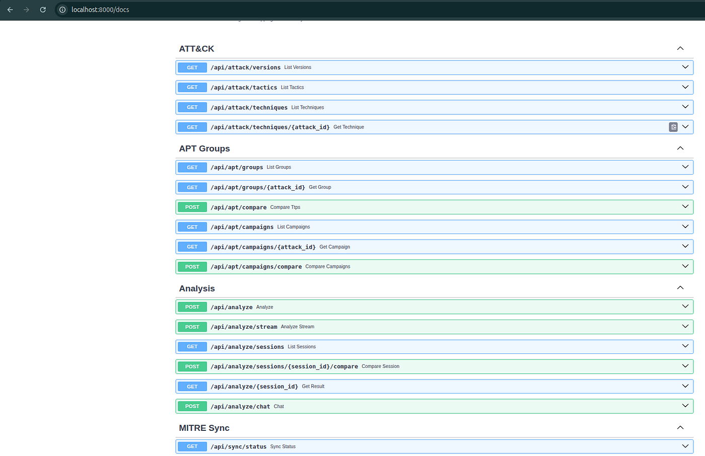

6Approved external PRs
Approved or accepted into public third-party curated security repositories.
External validation / publications
A reviewer-facing credibility page for accepted upstream pull requests, open maintainer review, Kali and packaging request artifacts, Medium and internal publications, tool releases, screenshots, PyPI/GitHub stats, and maintainer-ready summaries.
Approved or accepted into public third-party curated security repositories.
32 GitHub PRs and 1 GitLab MR submitted for maintainer review across CTI, malware, detection, cloud, AI, mobile, and lab lists.
Local exported article corpus, with 198 generated navigator docs for 1200km integration.
GitHub release, PyPI package, wheel/sdist artifacts, CI, tests, Kali request text, and docs.
GitHub release, green CI, clean Docker deployment validation, sector intelligence, IOC workflows, MalwareGraph-backed Malware Analysis, Asset Attack Surface Mapping, screenshots, documentation, quickstart, and production-readiness notes.
Live public portfolio total across 81 GitHub repositories, including 36 forked repositories, 14 repository forks, 20 GitHub followers, and 22 combined stars for AIDebug plus AdversaryGraph.
Live public GitHub follower count for the anpa1200 account at verification time.
Combined clone count across 12 active source repositories (Jun 14–27 2026). 1,372 unique cloners portfolio-wide.
Accepted and pending upstream pull requests are tracked separately so open submissions are not presented as accepted validation.
GitLab submissions are tracked as open review evidence only until there is upstream approval or acceptance.
Public GitHub footprint at snapshot time, including source repositories and forked repositories.
Repository traction and release evidence for the self-hosted CTI platform.
Repository traction and release evidence for the malware-analysis and reverse-engineering debugger.
Repository traction for the malware unpacking and deobfuscation toolkit.
27 of 32 open GitHub PRs have no maintainer comments or reviews yet. 0 are draft PRs.
Main reason for the backlog: external maintainer review latency. Actionable technical items at this snapshot: 0 behind, 3 blocked, 7 unstable.
Highest-star public repositories visible under the GitHub account at snapshot time.
Repository metrics are point-in-time public GitHub/GitLab observations. Stars, forks, issues, and review status can change after the snapshot.
| Project / Contribution | Status | Upstream | Evidence |
|---|---|---|---|
| 1200km Lab Work General cybersecurity lab portfolio submission. |
Approved | okhosting/awesome-cyber-security | PR #27 |
| AdversaryGraph AI-powered CTI and MITRE ATT&CK analysis platform submission. |
Approved | okhosting/awesome-cyber-security | PR #30 |
| 1200km Vulnerable Lab Projects Vulnerable application and lab portfolio submission. |
Approved | vavkamil/awesome-vulnerable-apps | PR #44 |
| AIDebug AI-assisted malware analysis and YARA-oriented reverse-engineering tool submission. |
Approved | InQuest/awesome-yara | PR #78 |
| ThreatMapper and CTI Analyst Field Manual Detection engineering resource submission accepted by upstream maintainers. |
Approved | infosecB/awesome-detection-engineering | PR #28 |
| Cyber Av3ngers Threat Actor Update MISP Galaxy threat-actor contribution accepted by upstream maintainers. |
Approved | MISP/misp-galaxy | PR #1227 |
Submissions to threat intelligence, SOC, DFIR, MITRE ATT&CK, threat hunting, incident response, blue-team, and detection ecosystems. The MISP Galaxy and detection engineering submissions have moved to approved evidence.
Submissions for reverse engineering, Python security, malware analysis, MalwareGraph standalone packaging, and threat intelligence lists. The YARA submission has moved to approved evidence.
Submissions to lab, vulnerable app, AI/LLM security, cloud security, mobile security, cyber range, blue-team, and detection collections.
Submissions for AI-assisted offensive security, audit, cloud assessment, CTI MCP, field manual, and HexStrike guide material.
Open PRs are listed as review evidence, not as acceptance. Approved items move to the approved section only after upstream maintainer approval or acceptance.
| Tool | Request Status | Maintainer-Ready Contents | Evidence |
|---|---|---|---|
| AIDebug | Prepared / request text | Tagged release, PyPI package, Debian metadata, man page, autopkgtest notes, dependency list, usage examples. | Kali request |
| AuditAI | Prepared / request text | Linux host assessment scope, local CLI path, optional AI dependency, package metadata, CI and tests. | Kali request |
| String Analyzer | Prepared / request text | Standard-library runtime, PyPI package, categorized malware/forensics triage output, tests and usage examples. | Kali request |
| RTSP Brute Force Tool | Prepared / request text | Authorized credential assessment scope, vendor presets, dry-run mode, JSON reports, Debian/Kali metadata. | Kali request |
| StratusAI | Prepared / request text | External/cloud assessment scope, no-AI mode, recommended external tools, package metadata, status notifications. | Kali request |
AI-assisted malware reverse-engineering debugger with ATT&CK mappings, YARA seed rules, IOC export, JSON output, TUI workflow, and analyst reports.
Self-hosted AI-assisted CTI platform for ATT&CK/ATLAS extraction, sector-aware actor relevance, IOC enrichment, MalwareGraph-backed malware analysis, asset attack surface mapping, APT comparison, D3.js Navigator workflows, STIX/OpenCTI export, and analyst-ready reporting.
Medium remains the public article source, while 1200km.com now provides internal navigation, Docusaurus pages, project pages, and ecosystem landing pages.
CTI workflows, detection engineering, malware analysis, OpenCTI, cloud and Kubernetes security, AI-assisted security tooling, reproducible labs, and technical guides.




Maintainer-ready because it has a tagged release, PyPI package, deterministic tests, GitHub Actions CI, release notes, screenshots, safety model, sample evidence, packaging metadata, and a clear non-exploit malware-analysis scope.
Maintainer-ready because v4.0.0 documents the AdversaryGraph platform, legacy redirects, clean Docker deployment validation, backend and frontend CI, sector intelligence, IOC Library workflows, VirusTotal/OTX/Malpedia enrichment, STIX/TAXII/MISP/custom feed import, Sigma/YARA and sandbox behavior feeds, MalwareGraph-backed Malware Analysis, Asset Attack Surface Mapping, screenshots, quickstart, admin guide, security model, limitations, demo dataset, and release notes.
Maintainer-ready because the labs are framed as authorized, reproducible education and validation environments with clear deployment paths, screenshots, documentation, and CTI/detection context.
Maintainer-ready because the work is organized around evidence handling, ATT&CK mapping, detection handoff, reproducibility, Sigma/MISP-compatible contribution patterns, and analyst-facing documentation.